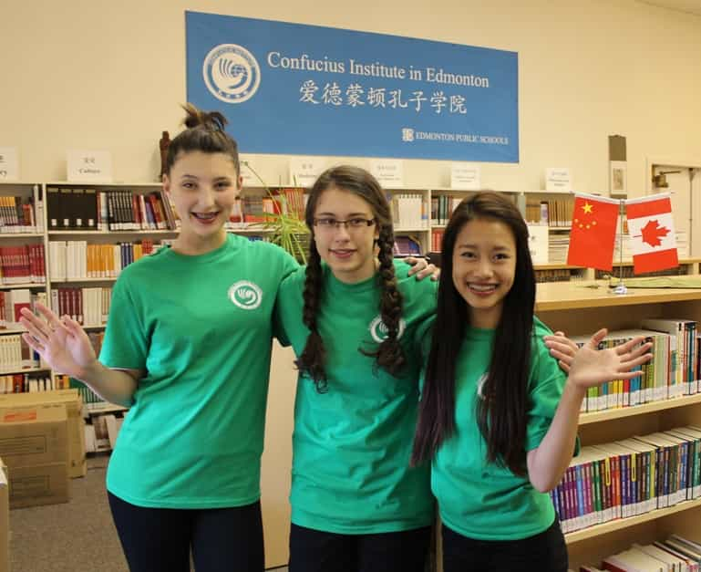

As Roosh elegantly has pointed out, culture is downstream from politics (and the opposite is also true). One can stress that culture is also downstream from economic power, both directly and indirectly.
One way to understand this is by looking at the term soft power – coined by the American political scientist Joseph Nye (1937-) in the late 1980s, developed in his work Bound to Lead: The Changing Nature of American Power (1990), and re-elaborated in a number of later books and articles.
According to Nye, soft power signifies “the ability to get what you want through attraction rather than coercion or payments,” and hence it is different from hard power phenomena such as military force and sanctions. Power – whether “soft” or “hard” – is often connected to foreign policy and a particular country’s will to influence other countries of the world by the means of dissemination of their own particular cultural taste.
Looked upon in a broader way, it can simply mean diffusion of culture in general and has less to do with power in the normal sense, but since soft power is often linked to current (Western) economic models and globalization, it can be hard to distinguish between soft power and hard economic power. In fact, the economic and the cultural dimensions do often overlap, or rather, soft power is often funded by governments.
I will provide five examples of how soft power currently is manifested in the world. Although there are several possible viewpoints in this regard, I focus on the country level.
The United States
The United States – the world’s largest economy and superpower over the last 130 years or so – does unhesitatingly use a lot of hard power, such as military force, the almost global imposition of their currency, and sanctions against certain countries.
But soft power-wise, one can also highlight the near-global diffusion of American popular culture – films, music, sports, fast food, etc. – and its largely market-based economic system and liberal democracy that many other countries either already have absorbed or wish for. The quote below offers a relevant and nuanced overall description of how hard versus soft power can be understood in the case of America:
Take the United Stated as the example. The worldwide popularity of Hollywood movies, Apple products, Google, Starbucks, and the NBA — to name just a few — may be cited as evidence of U.S. soft power, but it would be far-fetched to argue that this soft power has been a crucial factor behind the U.S. ability to get what it wants in other parts of the world. For one thing, drinking Starbucks coffee or watching the NBA does not necessarily translate into pro-American policy preferences. For another, it is difficult to imagine that the symbols of American soft power would have spread to the rest of the world and had such broad appeal had it not been for unrivaled American economic and military power.
China
Chinese soft power has become more evident during the recent years – a country set to be the largest economy in the world in the not too distant future – and this has been manifested through for instance the large funding and dissemination of Chinese academic institutions and Chinese cultural centers around the world, as well as large-scale events such as the Summer Olympics in Beijing in 2008:
The Chinese government also has spent hundreds of billions of dollars improving the communication capabilities of its media outlets like CCTV, organizing mega events such as the Olympic Games and Shanghai Expo, funding Confucius Institutes, hosting summits attended by dozens of world leaders (e.g. APEC), and sponsoring forums on regional security and prosperity (e.g. the Boao Forum). An important justification for such lavish spending is that these activities can contribute to China’s soft power.
In democratic countries like Canada and Sweden, the academic freedom appears to have been undermined by Chinese-funded and -controlled institutes, which has resulted in several shutdowns of Confucius institutes that promote research on Chinese culture.
Perhaps China may not be as successful as the United States in this regard (people do generally long more for democracy and Starbucks than Confucian values), but the Chinese government does still strive for the use of soft power and has funded a vast amount of projects with large sums of money.

Saudi Arabia
Saudi Arabia is in total a rich country indeed, and at the same time it is one of the most authoritarian regimes in the entire world.
Saudi Arabia’s soft power is intimately connected to the country’s Wahhabi doctrine, a “modern” and fundamentalistic form of Islam that was founded during the late eighteenth century and which advocates a draconican, Sharia-based (Hanbalic school) interpretation that will not allow any other religion or form of Islam. This religio-cultural framework has been funded by rich and influential Saudis since the 1970s onwards:
All in all, Saudi figures show that in the period 1973 and 2002, the kingdom spent more than $80 billion to promote Islamic activities in the non-Muslim world alone. This truly colossal sum has built a huge network of Wahhabi-controlled institutions, including over 1500 mosques, 150 Islamic Centers, 202 Muslim colleges, and 2000 Islamic schools in non-Muslim countries alone. (Alexiev 2011)
Unfortunately, not all Muslims stand against Wahhabism and its ideological twin, Salafism, which is manifested through the Islamic State and other organizations and movements that partially hinge on totalitarian ideas.
Russia
Russia constitutes one of the largest countries and economies in the world, and like China and Saudi Arabia it is more or less authoritarian. Another current characteristic is its geopolitical expansions in, for instance, Ukraine.
Besides military hard power, influential Russians use soft power by the means of media channels such as Russia Today in order to spread an alternative worldview, different from the Western, pro-EU and pro-American counterpart.
This might be a relatively fruitful way to get both Western and other people more on the Russian side, or at least to have a more nuanced understanding of Russia and what it aims for both culturally, economically and (geo)politically.
South Korea
ROK readers are familiar with K-pop and the Korean wave.
However, I might add that the South Korean government, after recognizing the good financial results in the aftermath of the distribution of particular TV dramas and K-pop, currently uses Korean wave products as means for national branding and consequently increasing revenues through tourism and export of Korean wave products, such as music, TV dramas, and food.
This will probably lead to – and has already to some exetent led to – a positive feedback relationship, since a probable consequence may be a better depiction of South Korea in the global community as well as more revenues, and the revenues can in turn be used for more investment in cultural products and their distribution, which may lead to even larger revenues.
It is also interesting that Chinese leaders are concerned about the vast popularity of South Korean celebrities in China, as well as the country’s close ties to the US. South Korea is definitely one of the big soft power players these days and constitutes a pop cultural alternative to both the American and Chinese products.

There are many ways in which soft power can manifest itself. The national level, in close relationship to political-economic elites, is one such way, and some countries are indeed more successful than others in this regard.
Read More: How The Deep State Operates